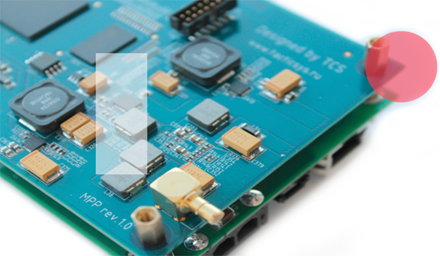
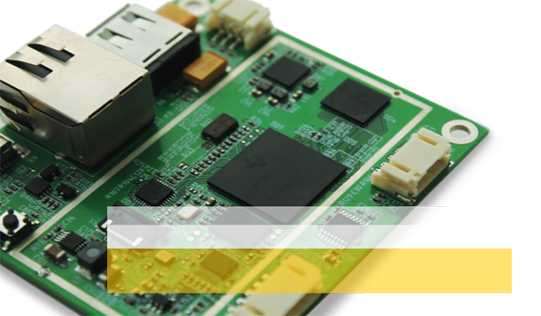

Программно-аппаратная
платформа для построения
беспроводных средств связи
на базе технологии SDR

- 802.22
- 802.16
- GSM
- WCDMA
- TETRA
- APCO
- DMR
- WiMAX
- BLUETOOTH
- OFDM
- ISM 2.4
- LTE
- SISO и MIMO
- RFID
- DVB
- DRM
inside
Texas instruments
multicore
TMS320C6674
chip
Texas instruments
multicore
TMS320C6674
chip

qubik
миниатюрный
одноплатный компьютер
в индустриальном исполнении
на базе TI AM1808
миниатюрный
одноплатный компьютер
в индустриальном исполнении
на базе TI AM1808
| Процессор | Память | Интерфейсы | Питание |
| AM1808 375MHz | LPDDR SDRAM 128Mb, SPI FLASH 8 Mb |
802.11 b/g/n, RJ45, USB2.0, miniUSB, RS232, miniSD card, LCD 40 pin |
5V DC 3.6 Li-Ion |
Software Defined Radio
технология построения устройств радиосвязи с
программируемыми параметрами
системы, которая включает в себя широкий круг методов проектирования, позволяющих
сформировать по-настоящему гибкую систему связи. Проще говоря, это система радиосвязи,
в которой компоненты, обычно реализованные в оборудовании на аппаратном уровне
(например, фильтры, модуляторы / демодуляторы, детекторы), в случае с
SDR — выполнены на программном уровне.
системы, которая включает в себя широкий круг методов проектирования, позволяющих
сформировать по-настоящему гибкую систему связи. Проще говоря, это система радиосвязи,
в которой компоненты, обычно реализованные в оборудовании на аппаратном уровне
(например, фильтры, модуляторы / демодуляторы, детекторы), в случае с
SDR — выполнены на программном уровне.
Cognitive Radio
передовая технология на пути к более рациональному использованию радиочастотного спектра.
Особенностью когнитивного радио является способность получать и передавать сигналы на различных частотах,
в зависимости от загруженности частотного спектра. В целом, это «интеллектуальное» радио,
которое проводит анализ электромагнитной среды и находит для передачи временно или постоянно
не используемые частоты, в зависимости от региона, что позволяет увеличивать количество передаваемой
на каждой данной частоте информации.
В полной мере, все преимущества этой технологии воплотил новый стандарт 802.22.
В 2007 году когнитивное радио заняло четвертое место в бюллетене Technology Review,
издаваемом Массачусетским технологическим институтом, опубликованого перечня десяти перспективных
технологий, которые могут оказать наибольшее влияние на
человеческое общество.
Особенностью когнитивного радио является способность получать и передавать сигналы на различных частотах,
в зависимости от загруженности частотного спектра. В целом, это «интеллектуальное» радио,
которое проводит анализ электромагнитной среды и находит для передачи временно или постоянно
не используемые частоты, в зависимости от региона, что позволяет увеличивать количество передаваемой
на каждой данной частоте информации.
В полной мере, все преимущества этой технологии воплотил новый стандарт 802.22.
В 2007 году когнитивное радио заняло четвертое место в бюллетене Technology Review,
издаваемом Массачусетским технологическим институтом, опубликованого перечня десяти перспективных
технологий, которые могут оказать наибольшее влияние на
человеческое общество.
Цель проекта
TACTICAL COMMUNICATION SYSTEMS (TCS) — высокотехнологичный проект, который стартовал в
сентябре 2011 года.
Основной целью проекта является разработка беспроводных средств связи и передачи данных
на базе технологии SDR (Software Defined Radio) и когнитивного радио, а также
популяризация и формирование сообщества людей, которые увлечены этими направлениями.
Мы открыты и рады конструктивным контактам!
сентябре 2011 года.
Основной целью проекта является разработка беспроводных средств связи и передачи данных
на базе технологии SDR (Software Defined Radio) и когнитивного радио, а также
популяризация и формирование сообщества людей, которые увлечены этими направлениями.
Мы открыты и рады конструктивным контактам!
Команда
Александр Кондратьев
Руководитель проекта, менеджер продукта
Александр Кузнецов
Архитектор алгоритмов цифровой обработки сигналов, DSP программист
Ярослав Шишов
Системный архитектор беспроводных средств связи, инженер-схемотехник
Павел Беляков
Инженер-разрабочик алгоритмов ЦОС, FPGA дизайнер
Иван Елкин
Инженер-схемотехник, конструктор